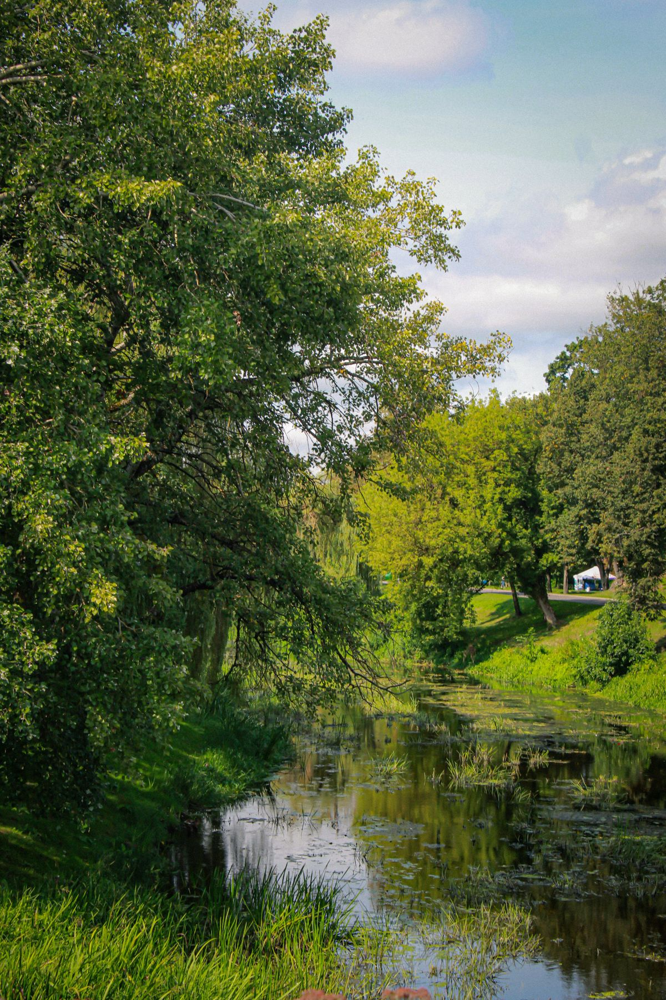
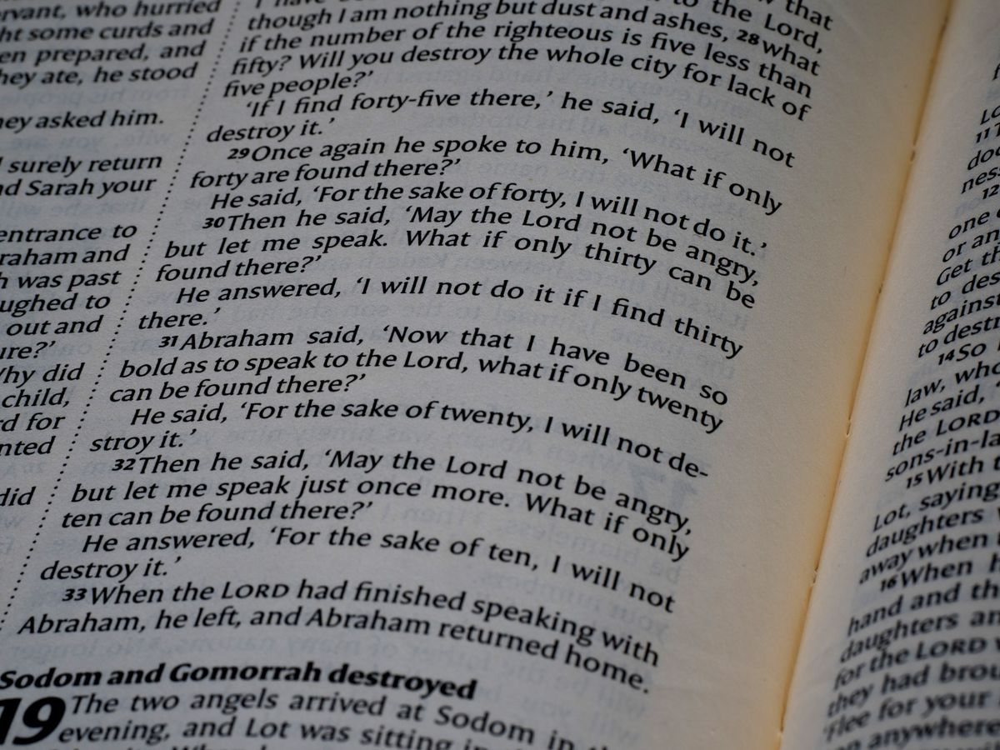
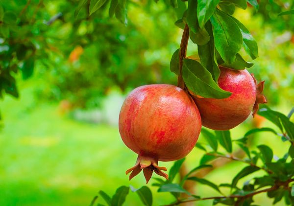

3 Acts, 1 Choice, 1 KJV Text: Genesis 3 Explained, the Fall Your Family Reads Slow
You open Genesis 3 and the garden is still good.
You open Genesis 3 and the garden is still good. Then a voice asks a small question. By the end of the chapter, the man and the woman must leave the garden. Read it slow, and you can see each step plain.
Genesis 3 tells how the first man and woman chose to eat from the one tree God said not to eat from. They hid, they passed blame, and God spoke words of judgment and mercy. God also gave a promise in verse 15 and then sent them out, and He set a guard so they would not eat from the tree of life in their fallen state.
What the video shows: The video walks through Genesis 3 in order, from start to end. It starts with a question in the garden and the talk with the serpent in verses 1 to 5. Next it shows the fruit in verses 6 and 7, and the eyes of the man and woman being opened. Then it shows God calling, "Where are you?" in verses 8 to 13, and the first hiding and the first blame. After that it goes through the curses in verses 14 to 19. It then shows Eve being named and God making garments of skins in verses 20 and 21. It ends at the east of Eden in verses 22 to 24, with the cherubim and the flaming sword, and it points ahead to the next story.
What happens in the first act of Genesis 3?
The first act is verses 1 to 5. It is a talk. No fruit is eaten yet. The talk is where the fall starts.
The chapter says the serpent was more crafty than the other beasts. A serpent is a snake. In this chapter, the serpent can talk. He talks to the woman. He does not start with a big lie. He starts with a question.
He asks, in short, did God say you shall not eat of every tree? That is not what God said. God said they could eat from the trees in the garden. There was one tree they must not eat from. So the serpent makes God's word sound too hard and too wide. He makes it sound like God said no to all trees.
The woman answers. She says they can eat from the trees. She says they must not eat from the tree in the midst of the garden. She says they must not touch it, or they will die.
Then the serpent pushes more. He says, you shall not surely die. He says God knows that when they eat, their eyes will be opened. He says they will be as gods, knowing good and evil.
See the steps. First, doubt about God's word. Next, a flat no to God's word. Next, a claim that God is holding back a good thing. The talk makes the one no sound mean. It makes the one tree sound like the best tree.
That is Act 1. It is five verses. It is just words. But the words do work. They plant doubt. They make the woman look at the tree in a new way.
Read this part slow with your family. Ask out loud: What did God say? What did the serpent say God said? Are they the same? They are not the same. That gap is the trap.

What did God say before the serpent spoke?
To know the trap, you need to know what God said first. That word is in Genesis 2, verses 16 and 17. It comes before Genesis 3.
God put the man in the garden to work it and keep it. God gave him food. God said he could eat freely from every tree in the garden. That is a wide yes. It is a kind yes.
Then God gave one no. He said not to eat from the tree of the knowledge of good and evil. The tree of the knowledge of good and evil is the one tree in this story that God set apart with a no. To know good and evil here means to know both what is good and what is bad, in a new and sad way, by doing the bad thing.
God also gave a clear warn. He said, in the day you eat from it, you shall surely die. Death means life will end. It also means a break with God, who gives life. The warn was plain. It was not hid.
So the rule was one no in a place full of yes. The warn was clear. The man heard it from God.
When the serpent speaks in Genesis 3, he does not bring up the wide yes. He acts as if the one no is the whole rule. He twists the word. That is why you must hold the true word in mind when you read the talk.
A good way to read is this. Read Genesis 2, verses 16 and 17 first. Say them out loud. Then read Genesis 3, verses 1 to 5. Mark each place where the talk does not match the true word. There are more than you think at first read.
This step helps kids and new readers too. It shows that the fight is first about trust. Do you trust what God said? Or do you trust a new voice that makes God's word sound wrong?

What choice do the man and woman make in the second act?
The second act is verses 6 to 13. This is the choice, the fall, and the talk with God after.
Verse 6 says the woman saw the tree. She saw it was good for food. She saw it was pleasant to the eyes. She saw it was a tree to be desired to make one wise. Three looks. Food for the body. Beauty for the eyes. Wisdom for the mind.
She took the fruit. She ate. She gave some to her husband, who was with her. He ate too.
Note that plain fact. The text says Adam was with her. Adam is the man's name. He is not far away in the text of verse 6. He eats too. The choice is shared.
Then their eyes were opened. The serpent said their eyes would be opened, and they were. But what they saw first was not power. They knew they were naked. Naked means with no clothes on. Before, that was no shame. Now it felt like shame. So they sewed fig leaves together. They made coverings for themselves. A fig leaf is a big leaf from a fig tree. Leaves are a weak cover. They tear. They dry out. They do not last.
Next they heard the voice of God walking in the garden in the cool of the day. They hid among the trees. The same trees that gave food now were used to hide.
God called to the man. He said, "Where art thou?" Art thou is old words for are you. God knew where they were. The question was for the man. It gave him a chance to come out and speak true.
The man said he heard God's voice, he was afraid, he was naked, and he hid. God asked who told him he was naked. God asked if he ate from the tree God said not to eat from.
Then blame starts. The man says the woman God gave him gave him the fruit, and he ate. He blames the woman. He also, in a round way, blames God for giving her. The woman says the serpent beguiled her, and she ate. Beguiled means tricked. She blames the serpent.
Each word has some truth in it. The woman did give the fruit. The serpent did trick her. But no one says the plain, full thing: I chose, and I ate. That is Act 2. A choice, a fall, a hide, and blame passed from hand to hand.

Why do they hide, and why does blame matter so much?
Hiding tells you what the fall did at once. Before the fall, the man and woman were close to God. After the choice, they run from God. Sin is a wrong choice against God's word. Its first fruit here is fear and shame, not joy.
Think of it like this first way. A child breaks a lamp he was told not to touch. When he hears his dad at the door, he does not run to his dad. He hides behind a chair. The break is one thing. The hide is a sign the bond is hurt. He fears the face he loved before.
Think of it a second way, in a new world of pictures. A good friend lends you his car. You scratch it. You park it far down the street so he will not see it at once. You hope time will fix what time will not fix. The hide does not heal the scratch. It just adds fear to harm.
Both pictures show the same hard idea. When we do wrong, we pull back from the one we wronged. Genesis 3 shows that pull back on the first day it happened in the story. They hid from God among the trees.
Blame matters for the same reason. Blame moves the weight off my back and onto yours. The man points to the woman. The woman points to the serpent. No one stands still and owns his part.
God asks questions, one by one. He does not ask the serpent a question in the same way. He speaks judgment to the serpent first in the next act. But to the man and woman, He asks and He hears. Even in judgment, He lets them speak. That is care inside a hard talk.
When you read with your family, pause here. Ask: Where do we hide? Where do we blame? The text is old, but the moves are the same now. We hide by not telling the full truth. We blame by telling only the part that helps us look less wrong.
The chapter does not add events here. It does not say they ran far. It does not say God was angry in a loud voice. It says they heard His voice, they hid, He called, they answered, they blamed. Keep to what it says. The plain text is strong on its own.

What does God say in the third act, in judgment and in mercy?
The third act is verses 14 to 24. God speaks to the serpent, then to the woman, then to the man. Then He acts with mercy, and then He sends them out.
To the serpent, God says he is cursed above the beasts. He will go on his belly and eat dust all his days. Dust here is dirt of the ground. It is a picture of being brought low.
Then comes verse 15, the key verse of the chapter. God says He will put enmity between the serpent and the woman, and between his seed and her seed. Enmity means deep hate and fight between two sides. Seed means children and those who come after. God says her seed shall bruise the serpent's head, and the serpent shall bruise his heel.
Bruise the head is a death blow. Bruise the heel is a real wound, but not the end. In this one verse, in the midst of judgment, God gives a promise. A child to come from the woman will crush the serpent's power, though he will be hurt in the fight. That is why many readers call verse 15 the first promise of a coming rescuer. Hope is spoken before they leave the garden.
Here is the hardest idea in the chapter, so hear it twice.
First, think of a seed in soil. You plant a small seed in dark ground. You can not see it work. Weeks pass. Then a green shoot comes up, strong, and it breaks the top of the soil. The promise in verse 15 is like that seed. It is small in words. It is planted in a sad day. But it will grow in time, and it will break the power that brought the fall.
Second, think of a night watch on a road. A family must walk a dark road home. Before they set out, the father lights a lamp and says, this light will stay lit till you get home. The road is still dark. The walk is still hard. But they do not walk with no light. The promise is that lamp. Judgment is real. Work will be hard. Pain will come. But God gives a lit word to walk by, on the same day as the fall.
Both pictures point to one truth. God did not leave them with judgment alone. He gave a promise at the start of the hard road.
Next, God speaks to the woman. He says pain in child birth will be much more. He speaks of her tie to her husband. Then God speaks to the man. Because he heard his wife's voice and ate from the tree God said not to eat from, the ground is cursed for his sake. In sorrow he will eat from it all his days. Thorns and thistles will grow. By the sweat of his face he will eat bread, till he goes back to the ground. For dust thou art, and unto dust shalt thou return. Thou art means you are. Man was made from dust of the ground in Genesis 2. Now death will bring him back to dust.
These are hard words. They name pain and toil that we still know. Work is still hard. Birth still hurts. Death still comes. The chapter does not hide that.
Then mercy shows in acts. The man names his wife Eve. Eve means life, and the text says she is the mother of all living. Even after the fall, life will go on through her. That name is a hope name on a sad day.
And God makes coats of skins for Adam and his wife, and He clothes them. Fig leaves were their own weak cover. Coats of skins are God's stronger cover. He does not send them out with leaves alone. He clothes them Himself.
Last, God sends them out of the garden. He says man has become as one of us, to know good and evil. Now, lest he take also from the tree of life and eat and live forever, God sends him forth to till the ground. Till means to work the soil to grow food.
He drives out the man. He places cherubim at the east of the garden, and a flaming sword which turned every way, to keep the way of the tree of life. Cherubim are mighty angels, God's strong messengers and guards. A flaming sword is a sword of fire that moves and turns. No one can slip past.
Why guard the tree of life? The text gives the reason. So man does not live forever in a fallen state. To live forever while broke by sin, with pain and death in the heart but no end, would not be mercy. The guard is hard, and it is also care. The way is shut for now, till God's promise does its work in time.
One more plain note. The chapter never calls the fruit an apple. It just says fruit. Many pictures show an apple, but the KJV text does not say apple. Keep to the text. Say fruit, as the chapter says.
How should your family read Genesis 3 slow, step by step?
Read it in the three acts, just as it is laid out. Do not rush to the end. Each act teaches its own part.
First, read Act 1 out loud, verses 1 to 5. Stop. Name the doubt. Ask what God said in Genesis 2, and what the serpent made it sound like.
Next, read Act 2, verses 6 to 13. Stop. Name the choice, the hide, and the blame. Ask who ate, who hid, and who blamed whom.
Next, read Act 3, verses 14 to 24. Stop. Name the judgment words in order: serpent, woman, man. Then name the mercy acts: Eve named as mother of all living, coats of skins made by God, and a promise in verse 15 that came before they left.
Then read the whole chapter again, all 24 verses, with no stops. Hear how it flows as one story. The second full read will feel new, because you know the parts.
Teach each hard word when you meet it. Serpent: a snake, here one who talks and tricks. Enmity: deep hate and fight between two sides. Cherubim: mighty angels who guard. Seed: children and those who come after. Dust: the dirt of the ground, what man was made from and will go back to in death.
Keep your notes in one place. Write the verse where you found each fact. If a claim is not in the chapter, do not add it to the chapter. That rule keeps your read true.
Checklist:
- Read Genesis 2:16-17 first and say God's one no and His warn in your own words
- Read Genesis 3:1-5 and mark where the serpent's words do not match God's words
- Read Genesis 3:6-13 and list the choice, the fig-leaf cover, the hide, and each blame in order
- Read Genesis 3:14-24 and write out verse 15, then list the mercy acts: Eve named, coats of skins, promise given
- Check the text again: does it ever call the fruit an apple? Note that it only says fruit

Your free tool for this step
Your free tool for this step is the Journey Tracker at https://therightway.life/tools/journey-tracker.html
The Journey Tracker helps you keep track of where you are in the chapter by chapter journey. You can mark chapters you have read, see what comes next, and keep a steady pace with your family. It is a simple way to not lose your place when you read slow, day by day.
Use it like this:
- Go to https://therightway.life/tools/journey-tracker.html
- Find Genesis in the list and mark Genesis 1 and Genesis 2 if you have read them.
- Mark Genesis 3 when you finish your slow read of all 24 verses.
- Write a short note in your own book or phone notes for verse 15, so you can find the promise again fast.
- Pick the next chapter, Genesis 4, for your next read, and keep the same three act habit if the chapter has clear parts.
What the tool does not do: It does not read the chapter for you, and it does not tell you what the text means. You still need to open the KJV text and read the words yourself. It also does not take the place of talking through the chapter with your family.
This work is kept free for every reader, and some readers give toward the labor of making it. There is no charge to use the Journey Tracker, and there never will be a charge for the study on this site.
The bottom line
Genesis 3 is one chapter with three acts and one choice at its heart. A talk plants doubt, a choice breaks trust, and then God speaks judgment with mercy inside it. The promise in verse 15, the name Eve, and the coats of skins all show care on a hard day. Read all 24 verses slow, in order, and let the KJV text say what it says, no more and no less. That slow, true read will carry your family well into the next chapter.